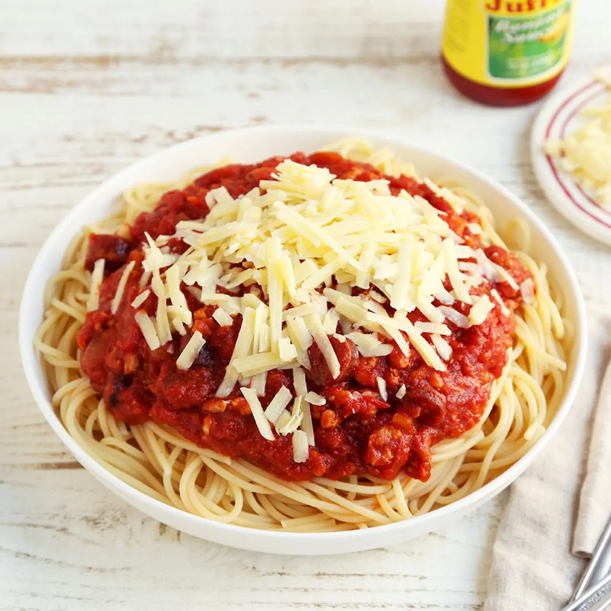

Odin Recipes
Home

This ain't no ordinary spagget. It's the FILIPINO Spagett. Its SwEET, literally.
Ingredients
- Sphaghetti Noodles
- Beef Mince
- Tender Juicy Hotdogs
- Any Luncheon Meats
- Sweet Filipino Sphaggeti Sauce (UFC/Del Monte)
- Aromatics: Garlic, Onions
- Shredded Cheddar Cheese
There isn't as many ingredients but the main important one is the Sweet Filipino Sphagetti Sauce specifically. IT IS A MUST.
Steps
- Boil the sphagetti noodles, depending on it's type that you brought.
- In a seperate pot/pan, saute the aromatics and ground pork.
- Add the hotdog and other luncheon meats.
- Add the sauce to the sauted aromatics and meats.
- Once cooked, combine the cooked noodles and sauce; put the shredded cheddar cheese on top and enjoy~!
You know what would work well with Sweet Filipino Spagget? Fried Chicken. That Jolibee combo never disappoints.